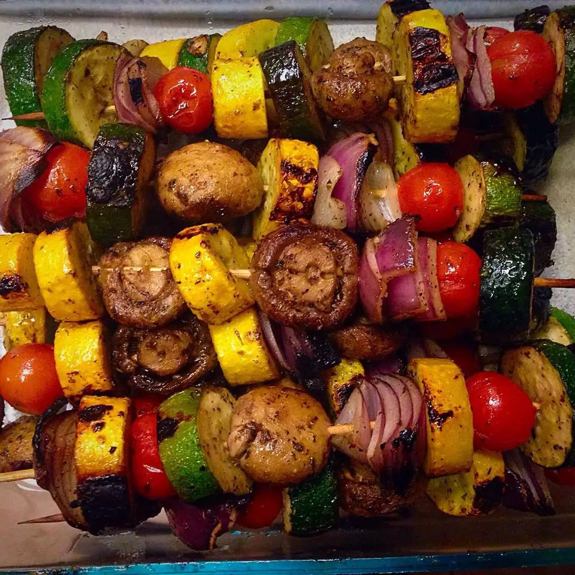

Grilled Veggie Skewers

These veggie kabobs are a yummy way to eat grilled vegetables.
ingredients:
- 1 fresh pineapple, cut into chunks
- 2 medium zucchinis, cut into 1-inch slices
- 2 medium yellow squash, cut into 1-inch slices
- ½ pound whole fresh mushrooms
- 1 medium red onion, cut into chunks
- 12 cherry tomatoes
- 1 medium red bell pepper, cut into chunks
- 8 bamboo skewers, soaked in water for 20 minutes
- ⅓ cup olive oil
- 1 ½ teaspoons dried basil
- ¾ teaspoon dried oregano
- ½ teaspoon salt
- ⅛ teaspoon ground black pepper
- Preheat a grill for medium heat and lightly oil the grate. Alternately thread pineapple chunks, zucchini slices, yellow squash slices, mushrooms, onion chunks, tomatoes, and bell pepper chunks onto skewers.
- Whisk olive oil, basil, oregano, salt, and black pepper in a bowl; brush some of the mixture over vegetables.
- Cook skewers on the preheated grill until vegetables are tender, turning and basting vegetables with remaining olive oil mixture occasionally, 10 to 15 minutes.